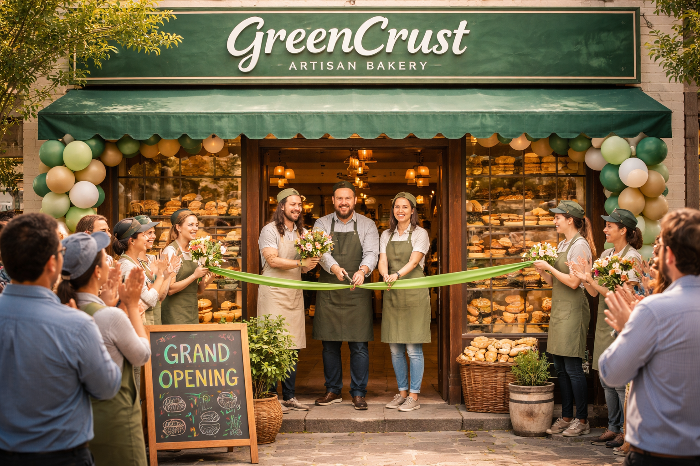

About Us
Welcome to GreenCrust Artisan Bakery! We are a family-owned business dedicated to creating exceptional baked goods with a focus on quality, sustainability, and community.

Our journey began with a simple passion for baking and a commitment to using only the finest ingredients. Over the years, we have built a reputation for excellence and have become a beloved part of our local community.
At GreenCrust Artisan Bakery, we believe that great bread is more than just food, it is an experience, a tradition, and a way to bring people together. Rooted in passion and crafted with care, our bakery is dedicated to creating wholesome, flavourful products that celebrate both quality and creativity.
We specialize in artisan baking, using time honoured techniques and the finest natural ingredients to produce breads, pastries, and treats that are as nourishing as they are delicious. Our signature “green crust” concept reflects our commitment to freshness, sustainability, and innovation blending unique flavours with a modern twist while staying true to classic baking traditions.

At GreenCrust, we believe that great taste starts with great ingredients. That's why we source our materials from local farms and suppliers who share our values of quality and sustainability.
Every loaf, every pastry, and every bite is made with attention to detail, patience, and love. We prioritize locally sourced ingredients wherever possible, ensuring that our products support our community while maintaining exceptional taste and quality.At GreenCrust Artisan Bakery, we are not just baking, we are creating moments. Whether you are starting your day with a warm loaf, sharing pastries with loved ones, or simply enjoying a quiet coffee break, we are here to make every moment special.